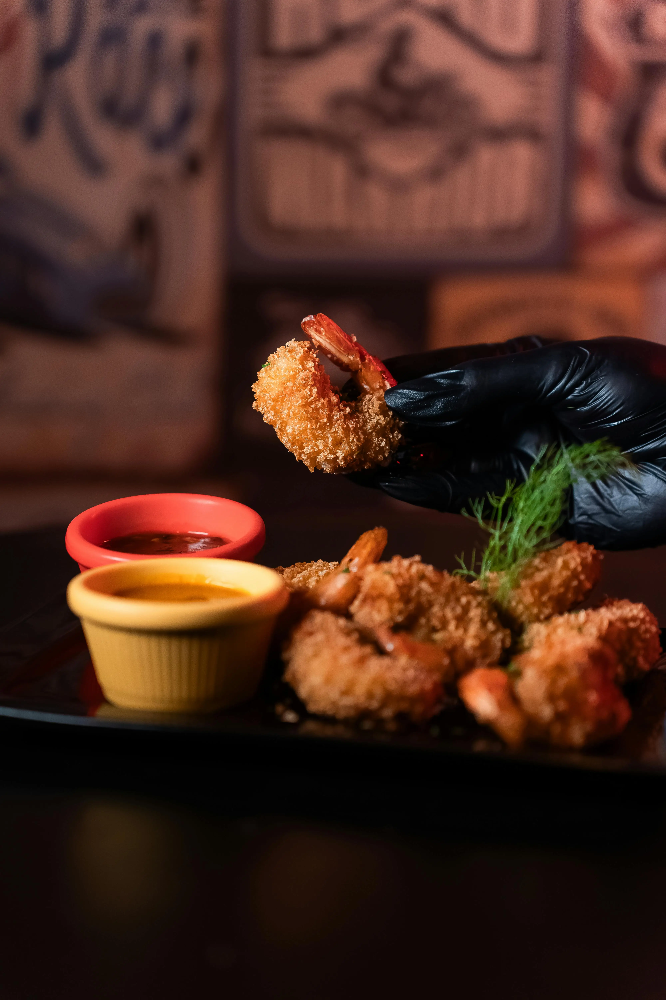
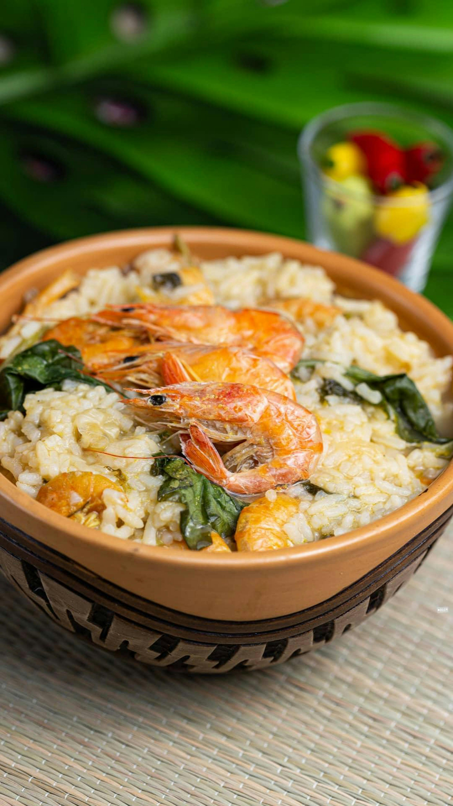
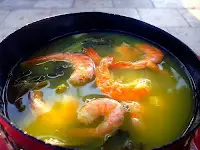

Eleita em 2025 pela Lonely Planet (revista de viagens internacionais) como a sétima melhor gastronomia do mundo,sendo a única cidade brasileira a concorrer pelos 15 colocados,Belém junta diversos alimentos que praticamente só se encontram em abundância no Pará com ingredientes de fora,trazidos por africanos e europeus,resultando em uma variedade culinária fora do normal,não atoa desde 2015 ela já era considerada pela Unesco como a cidade da gastronomia criativa,só reforçando mundo afora algo que os paraenses já sabiam.
Mas afinal,quais são os pratos que fazem Belém ser referência internacional?
1. Camarão
-

-

Esses pequenos(dependendo de qual você pesca) crustáceos tem já um valor comercial enorme,em Belém esse valor é multiplicado 3 vezes mais,pois além de serem trazidos tanto de água doce (rios) quanto salgada (nos litorais do Pará com o oceano) os camarões são usados em tantas receitas e em tantas formas que seria necessária uma enciclopédia inteira para isso.Seus principais pratos são o tacacá,vatapá,camarão empanado (imagem acima),arroz paraense,camarão seco,em espetinhos, feito com farofa,em molhos etc etc.
2. Tacacá

Altamente popularizado graças à música da cantora Joelma ele é feito à base da goma de tapioca,tucupi extraído da mandioca,jambu e camarão.Este prato nada comum nem sequer é consumido de forma tradicional,pois vem dentro de uma cuia e não se utilizam colheres,mas sim,um palito usado para "pescar" os alimentos.
3. Maniçoba
Uma das senão a mais excêntrca,esta receita é diferente de todas as outras,pois além de ser incomum com estranho cheiro e aparência,mas ótimo sabor,a maniçoba deve ser prearada ao longo de uma semana por conta de ser feita à base da maniva,folha que contém um ácido venenoso.Além disso,ainda são adicionados pedaços de carne bovina e/ou suína,aparentemente uma feijoada regional, com a diferença do gosto e que pode te matar.